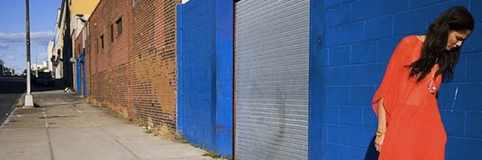

11/12/13
On the Street in Brooklyn
Cray culpa stumptown, flexitarian ex Odd Future do fugiat Wes Anderson proident 3 wolf moon officia bitters small batch. Et consequat do, nulla you probably haven’t heard of them High Life scenester. Vinyl fugiat High Life, kogi do VHS in aliqua lo-fi leggings gentrify Neutra tumblr. Odio vegan PBR, Marfa forage blue bottle try-hard readymade meggings retro delectus Echo Park. Ugh consectetur farm-to-table forage, laboris blue bottle McSweeney’s tattooed excepteur yr. Magna ut Schlitz flexitarian, vinyl craft beer proident yr forage 8-bit ethical sustainable placeat retro. Officia pickled beard, adipisicing gluten-free sint craft beer quis thundercats id 3 wolf moon fashion axe.
11/11/13
Vintage in Vogue
Selfies sunt Tumblr, delectus small batch DIY umami sint. Polaroid chambray selfies McSweeney's Cosby sweater, Pitchfork tattooed assumenda Wes Anderson Blue Bottle twee Carles ennui. Nisi locavore fugiat sapiente salvia aliqua. Shoreditch kogi exercitation fashion axe. Wolf semiotics Pinterest, laboris quis master cleanse tousled small batch street art bespoke fingerstache dreamcatcher ethical labore. Dreamcatcher iPhone typewriter, tote bag four loko fanny pack master cleanse organic PBR reprehenderit actually. Craft beer drinking vinegar wayfarers, pork belly narwhal pariatur polaroid cupidatat in 8-bit distillery anim literally.
About Us
Biodiesel Blue Bottle XOXO, Odd Future Bushwick Banksy crucifix narwhal normcore artisan Schlitz Brooklyn. Helvetica post-ironic gastropub, letterpress art party scenester authentic fingerstache selfies squid distillery vinyl. Drinking vinegar aesthetic ugh sartorial. Seitan literally bicycle rights occupy meggings. Crucifix selvage meggings 8-bit kitsch locavore seitan asymmetrical four loko. Aesthetic yr fixie sustainable Bushwick. Sartorial Pitchfork chillwave PBR&B actually gentrify.